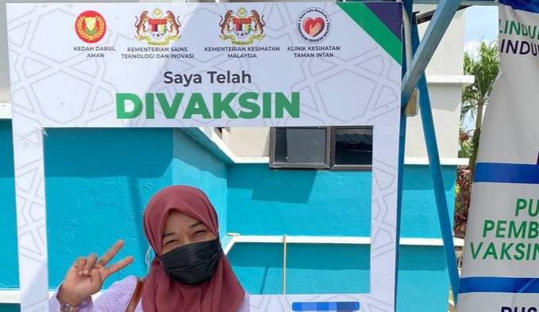
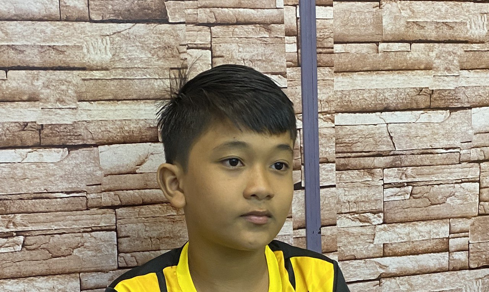

Muhamad Danish Irfan
Was born in Hospital Kota Bahru, Kelantan, now studying at UiTM Sungai Petani.
Yusni Bin Othman
He's from Kedah, working under Ministry of Tourism.

Kilawati Binti Mohd Tamin
She's from Kelantan, an educator, a housequeen, a mom of two sons.
Muhamad Daniel Haziq
Age 13, studying in SMK Pinang Tunggal, he good at Math tho.
